https://id.rijksmuseum.nl/200382130 · drawing · Δ = -0.727

Vérité (projetée)
61B2 — historical persons
T_star (H-F1 0.727)
61B111 — anonymous historical person portrayed alone
61B2 — historical persons
T-D (H-F1 0.000)
(vide) — (no own text)
Vérité (projetée)
61B2 — historical persons
T_star (H-F1 0.727)
61B111 — anonymous historical person portrayed alone
61B2 — historical persons
T-D (H-F1 0.000)
(vide) — (no own text)
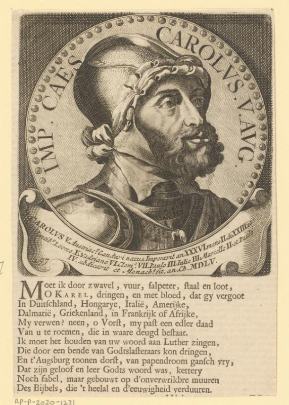
Vérité (projetée)
61B2 — historical persons
44B113 — king
45C221 — helmet
44B112 — emperor
T_star (H-F1 0.720)
44B1 — ruler, sovereign
45 — warfare; military affairs
61B2 — historical persons
T-D (H-F1 0.095)
48C26 — medal (considered as a piece of sculpture, regardless of its specific function)
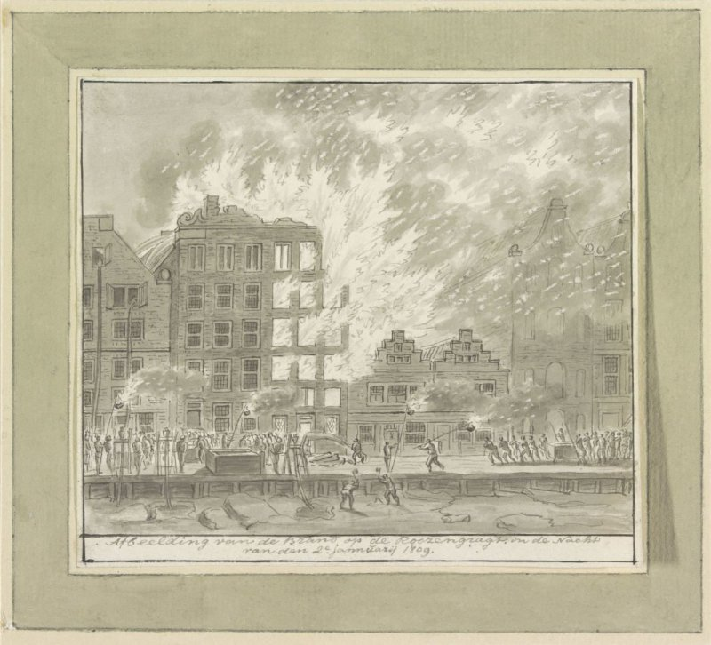
Vérité (projetée)
41B5 — fire-fighting
41B4 — on fire, ablaze
T_star (H-F1 1.000)
41B4 — on fire, ablaze
41B5 — fire-fighting
T-D (H-F1 0.421)
41B4 — on fire, ablaze
44F — revolution, revolt
48C1 — architecture
61A — historical events and situations
61E — names of cities and villages
61F — names of historical buildings, sites, streets, etc.
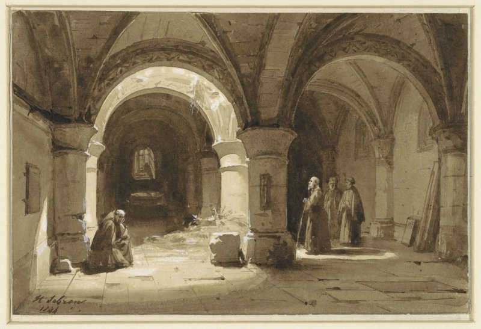
Vérité (projetée)
11P31521 — monk(s), friar(s)
11P31514 — cloisters ~ monastery
T_star (H-F1 0.533)
11P31521 — monk(s), friar(s)
11Q713 — interior of church
3 — Human Being, Man in General
48C1622 — vault ~ architecture
T-D (H-F1 0.000)
48C141 — representation of real building (either existing or having existed)
48C1622 — vault ~ architecture
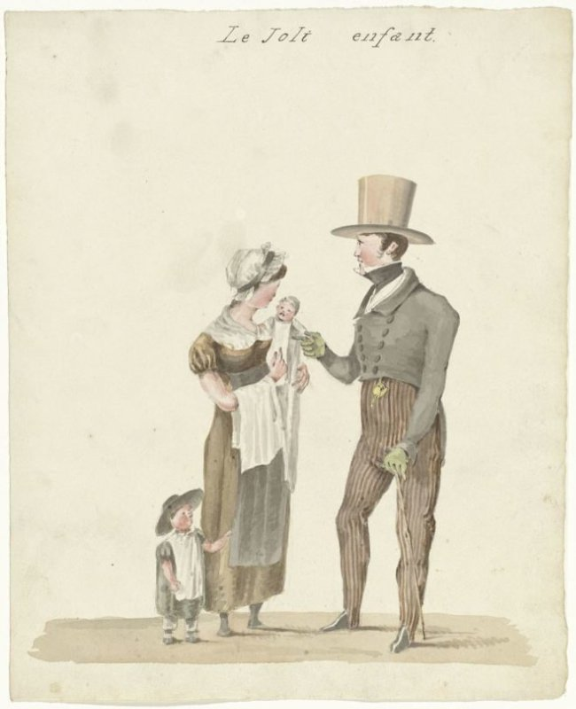
Vérité (projetée)
42B74 — family group, especially parents with their child(ren)
T_star (H-F1 0.267)
42A — procreation, birth and (early) youth
46BB2 — persons engaged in trade and commerce - BB - women engaged in trade and commerce
61B2 — historical persons
T-D (H-F1 0.769)
42B741 — father and child(ren), man and child(ren) (family group)
61 — historical events and situations; historical persons
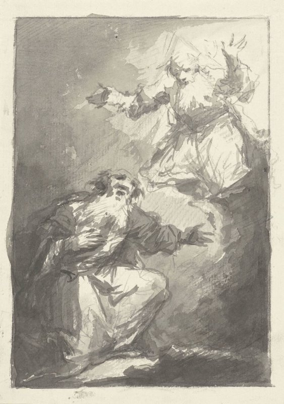
Vérité (projetée)
71C — Genesis: the patriarchs
71E — Exodus, Leviticus, Numbers, Deuteronomy, Joshua: from the bondage of the Israelites in Egypt to their settlement in Canaan
T_star (H-F1 0.500)
11 — Christian religion
71 — Old Testament
T-D (H-F1 0.000)
(vide) — (no own text)
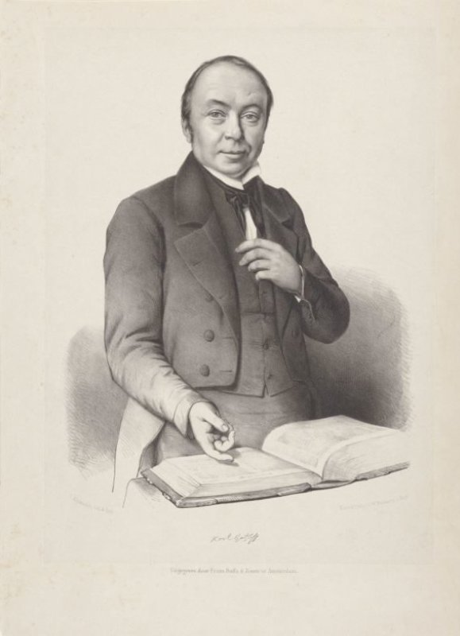
Vérité (projetée)
61B2 — historical persons
T_star (H-F1 0.500)
49M32 — book
61B — historical persons (portraits and scenes from the life)
T-D (H-F1 0.000)
(vide) — (no own text)
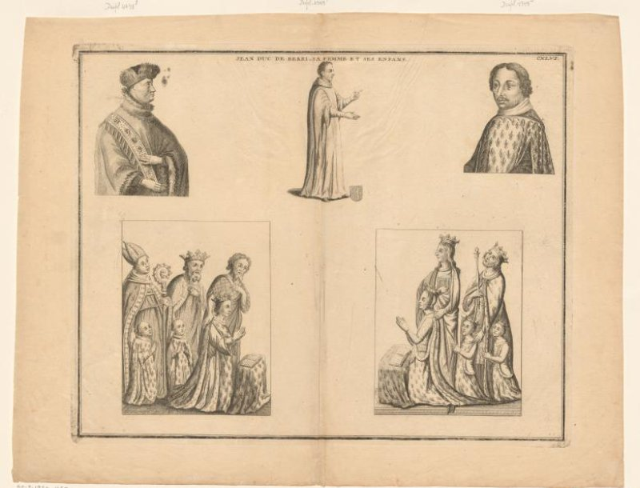
Vérité (projetée)
61BB2 — historical persons - BB - woman
61B2 — historical persons
T_star (H-F1 0.000)
11 — Christian religion
44B1 — ruler, sovereign
T-D (H-F1 0.500)
11P — the Church (as institution)
61B — historical persons (portraits and scenes from the life)
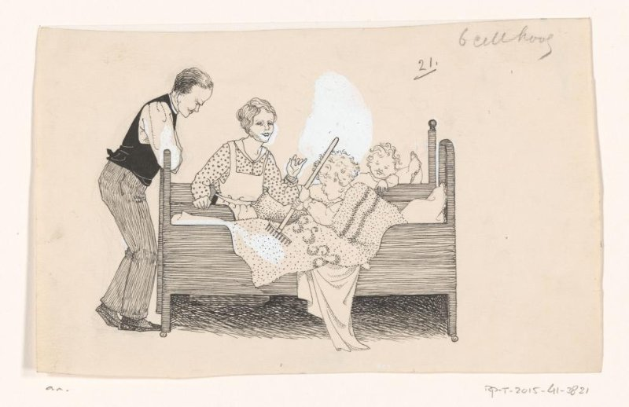
Vérité (projetée)
41A761 — bed
47I15(RAKE) — agricultural implements: rake
42B — parents with their children
T_star (H-F1 0.125)
31 — man in a general biological sense
4 — Society, Civilization, Culture
T-D (H-F1 0.571)
25F7 — lower animals
3 — Human Being, Man in General
41A761 — bed
42A3 — mother and baby or young child
42B — parents with their children
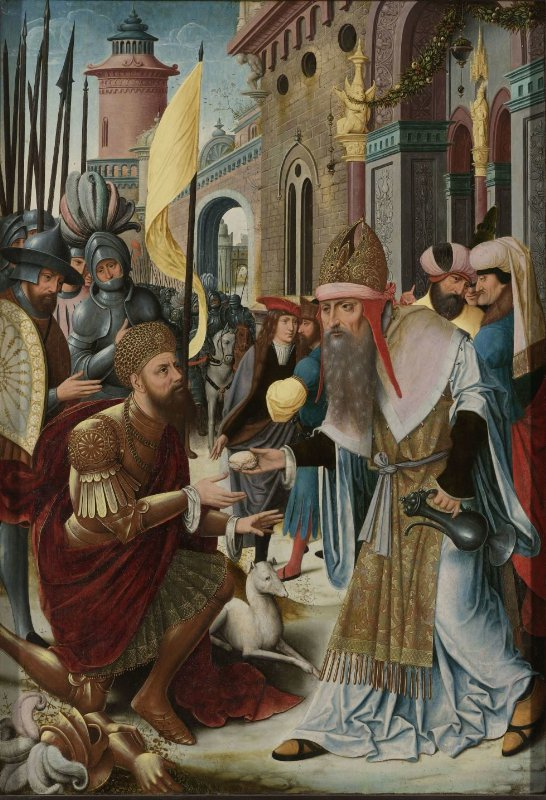
Vérité (projetée)
71C117 — the meeting of Abraham and Melchizedek, the high priest and king of Salem, who brings bread and wine (Genesis 14:18-20)
T_star (H-F1 0.444)
71 — Old Testament
73 — New Testament
T-D (H-F1 0.000)
1 — Religion and Magic
31A25(+93231) — (no own text)
44B11 — ranks ~ rulers, sovereigns
98B — male persons from classical history
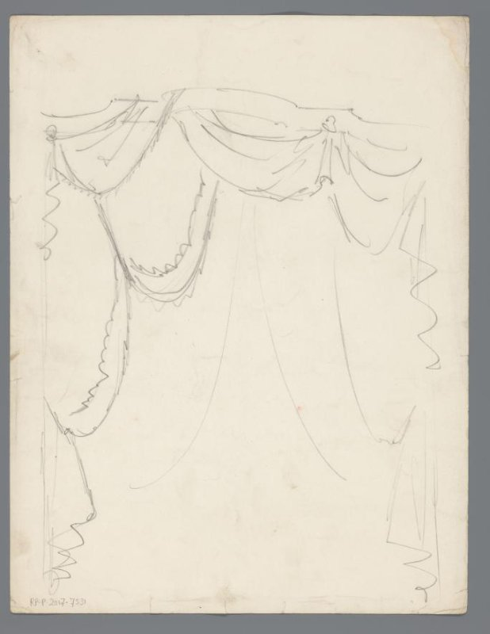
Vérité (projetée)
41A33 — window
41A422 — hangings and drapery
T_star (H-F1 0.667)
41A421 — curtains
41A422 — hangings and drapery
48C8 — the arts of the stage: ballet, theatre, musical drama, motion picture
T-D (H-F1 0.222)
4 — Society, Civilization, Culture
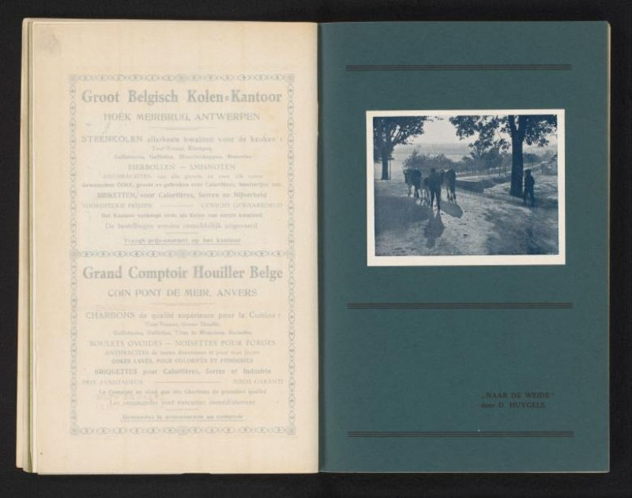
Vérité (projetée)
47I2112 — cow
47I221 — herding, herdsman, herdswoman, shepherd, shepherdess, cowherd, etc.
46C11 — road, path
T_star (H-F1 0.444)
2 — Nature
46C1 — traffic on land
T-D (H-F1 0.000)
(vide) — (no own text)